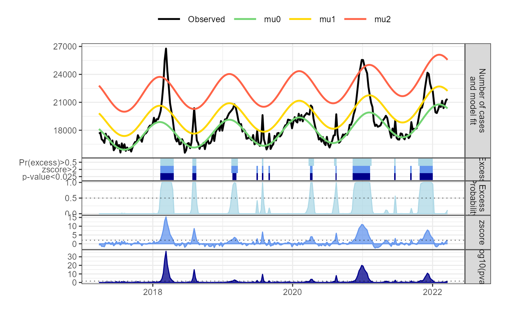

Plot EXCODE summary diagnostics across multiple panels
plot_excode_summary.RdVisualizes an EXCODE summary as a multi-panel figure showing (i) observed counts with model fits (`mu*`), (ii) excess probability \(1 - \mathrm{posterior0}\), (iii) z-scores, (iv) \(-\log_{10}(p\text{-value})\), and (v) threshold “tiles” indicating which metrics exceed user-defined cutoffs.
Usage
plot_excode_summary(
excode_summary,
states,
posterior_cutoff = 0.5,
zscore_cutoff = 2,
p_cutoff = 0.025,
type = c("line", "bar")
)Arguments
- excode_summary
A data frame (or tibble) with at least the columns:
date: Date or POSIXt.observed: Numeric observed counts.posterior0: Numeric posterior probability of no excess (can containNA, treated as 1).zscore: Numeric z-score (can containNA, treated as 0).pval: Numeric p-value (can containNA, treated as 1).One or more columns named
mu0,mu1, … with model fits.
- states
Optional integer giving the number of latent states (i.e., how many
mu*series to consider). If missing, it is inferred from the available columns matching"^mu\d+$". If provided, onlymu0throughmu{states-1}that exist inexcode_summaryare used.- posterior_cutoff
Numeric in \([0,1]\). Horizontal reference line and threshold for the excess probability panel (default
0.5).- zscore_cutoff
Numeric. Horizontal reference line and threshold for the z-score panel (default
2).- p_cutoff
Numeric in \((0,1]\). Transformed to \(-\log_{10}\) for the p-value panel and used as a threshold in the tiles (default
0.025).- type
Character, either
"line"or"bar"(partial matching disabled viamatch.arg). Controls whether panels are drawn with ribbons/lines ("line") or columns ("bar"). In the first panel,"bar"drawsobservedas bars andmu*as steps;"line"draws all series as lines.
Value
A patchwork object (composed of ggplot2 plots) that can be
further modified with + (e.g., themes, scales) or saved with ggsave().
Details
Missing values are handled defensively before plotting:
posterior0 = 1 (no excess), zscore = 0, pval = 1.
A consistent black/green/orange-red palette is used for the first panel:
observed in black; mu0 in green; remaining mu* from gold to tomato.
Facet strips are placed on the right and a common theme is applied so panels
align cleanly when combined with patchwork.
The final plot stacks five panels (from top to bottom):
Observed counts and model fits.
Excess probability \(1 - \mathrm{posterior0}\) with a dotted cutoff.
z-score with a dotted cutoff (ribbon handles positive/negative).
\(-\log_{10}(p)\) with a dotted cutoff at \(-\log_{10}(\mathrm{p\_cutoff})\).
Binary “tiles” summarizing whether each metric exceeds its cutoff.
Examples
data(mort_df_germany)
res_har_nb <- run_excode(surv_ts = mort_df_germany,
timepoints = 325,
distribution = "NegBinom",
states = 3,
periodic_model = "Harmonic",
time_trend = "Spline2",
return_full_model = TRUE)
sum_har_nb <- summary(res_har_nb)
plot_excode_summary(sum_har_nb, type="line")
